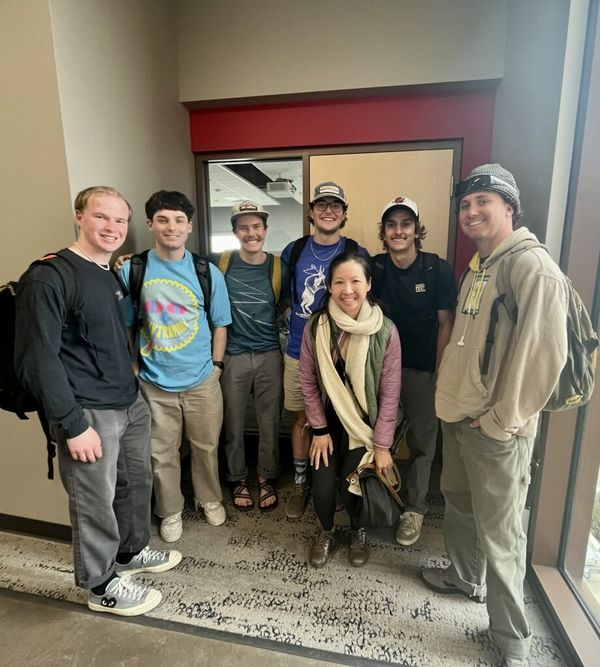
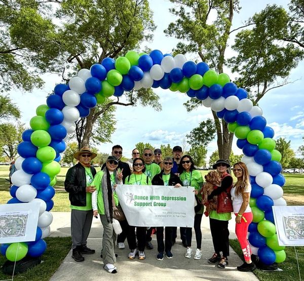
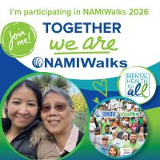
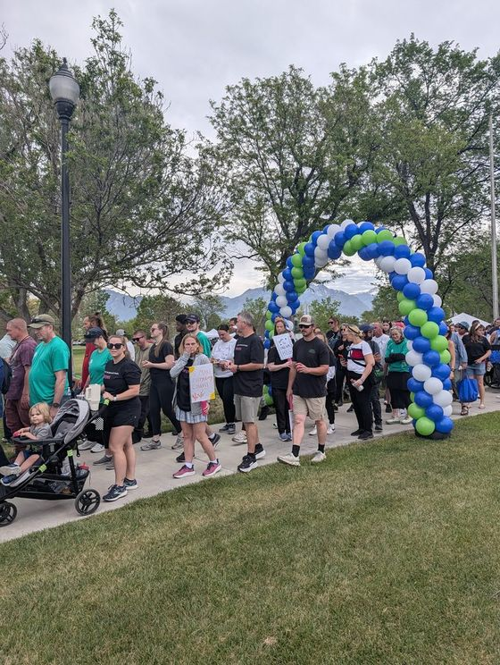

Partner with us to further your mission
We provide financial and hands-on support to amplify the impact of our partners


Our Approach: Amplifying the Impact of Our Partners
In 1998, after the suicide of her husband, Dr. Therese Chan turned her grief into strength. She founded Dance with Depression (DWD HK), a nonprofit Hong Kong that coordinates peer support groups for individuals living with depression. Dance with Depression in Utah carries forward the mission of DWD HK, which continues to inform our core values. However, it adopts a different approach than DWD HK: we provide matching funding and supportive services to organizations that align with our values and mission, rather than running programs directly. This way, we contribute to the cause while helping to honor and amplify the work of local deserving organizations.
Potential partners are welcome to submit a short introduction letter via our website describing their mission and past projects. We will reach out if there is an alignment to our mission.
Financial Support
We provide financial support primarily through matching grants. By committing to a defined donation amount, we help our partners unlock additional funding that might otherwise be unavailable.
All donations made to Dance with Depression (EIN 33-1570070) are designated for specific partner projects. Funds received, along with our matching contributions, are disbursed to partners based on project milestones.
We conduct due diligence and ongoing monitoring to ensure milestones are met before each disbursement. This approach benefits our partners by strengthening accountability and benefits donors by providing confidence that their contributions are being used effectively.
Hands-on Support
In addition to funding, we offer hands-on support to help partners achieve our joint project goals. This may include serving on boards of directors or volunteering expertise in areas such as governance, financial management, grant writing, and marketing. When additional capacity or specialized expertise is needed, we can connect partners with affordable consulting or staffing resources.
Staffing challenges—particularly during periods of growth or transition—are often among the most significant obstacles organizations face. We may assist by helping recruit staff, interns, or volunteers, and in some cases by stepping into interim leadership roles to provide stability.
Our goal is to ease operational transitions and strengthen organizational capacity, so our partners can remain focused on delivering impactful programs.
Below is an example of our project
NAMIWalks Utah 2026
With much trepidation, Eva signed up to chair the upcoming 2026 charity walk for NAMI Utah again! She also offered to raise funds through Dance With Depression for the walk.
Dance with Depression has committed to match 1X funding up to $5000 for the charity walk event NAMIWalks Utah 2026.
Donations will provide critically needed operational funds for NAMI Utah to continue to provide FREE mental health resources and support to those suffering from mental illness and their loved ones. These services include coursework, peer-led support groups, lectures, and suicidal prevention training.
Learn more about the joyous family-oriented event at www.namiwalks.org/utah
Donations accepted from 1 Jan 2026 to 30 May 2026 only.
Outcome Report
We did it! NAMIWalks 2026 yielded 31 corporate sponsors and nearly 1000 attendees. We raised 90,000 of funding of which $6000 was donated by the match funding initiative by Dance with Depression. We appreciate the generous donations of $3000 from our donors.
On 8 October 2026, NAMI Utah was so kind as to giving an award of 2026 Volunteer Award to Eva. Below is the photo with Robin Holcomb, ED of NAMI Utah, and our event honoree Charon and Eric Rumples.


